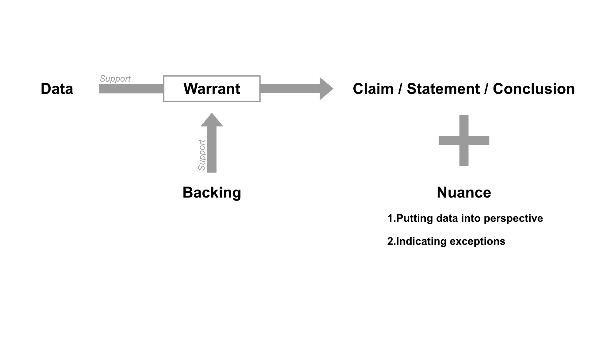

Creating a Draft Structure or Outline
This page focuses on creating a draft structure or outline for the literature review. At this stage, the goal is to organize the material gathered in the previous steps into a workable structure before writing the full paper. It is important to note that a draft structure is not only about arranging sections or making the outline look complete, but also about beginning to shape the reasoning and argument of the review.
The materials on this page are drawn from Canvas and include Annex VI on the draft structure or outline of the report, Annex V on scientific reasoning and argumentation, Meeting 3 PowerPoint slides and the Template for Draft Structure and Literature Review.
Annex VI: The Draft Structure/Outline of the Report
Once you have found all of the relevant information for the review, it is important to think about how to incorporate this information into your report. Writing a draft structure can be helpful in this respect. Although students tend to neglect this stage, outlining is one of the most important steps in writing every academic paper. This is the easiest way to organize the body of your text and ensure that you haven’t missed anything important. The advantage of writing down a draft structure is that it forces you to start thinking about the structure of the report and how its components are organised before you start writing it, which helps you avoid losing your way later on. Another advantage is that it forces you to start thinking about the arguments you need to present to substantiate your conclusions. The answer to the central question, i.e the main conclusion, must of course follow from these arguments.
The first part of the Writing Skills I practical, the preparatory phase is concluded with the draft structure for your report. To help you create a clear and coherent outline, we have included a Template Draft Structure on Canvas.
Annex V: Scientific reasoning and argumentation
At this point in the preparatory phase, you have determined what your central question will be and why it’s interesting to answer this specific question. You have also found a great part of the literature that you would like to use in your report. The next step is to figure out how exactly you are going to answer your central question. And more importantly, how to substantiate the answer to that question. The presentation of your arguments is crucial in this. It is important to set out a clear reasoning in which you substantiate how your data, the findings you are planning to discuss, lead to a certain conclusion. You do not strictly provide a summation of findings, but you evaluate them and relate them to one another, to come to a nuanced conclusion. For this, you need to apply a scientific form of argumentation.
Scientific argumentation
Scientific argumentation is quite different from typical arguing put forward by people in a debate. In a debate, the goal is for one person's point of view to "win" over another's. The purpose of scientific argumentation is to refine scientific ideas to come as close as possible to understanding reality.
During the processes of scientific inquiry, scientists will make claims, based on observable evidence. To convince other scientists of their statements, it is important that they explain how their evidence is relevant to the statement they make, they have to justify how and why the evidence leads to the specific conclusion drawn. So, scientists spend lots of time assessing, critiquing, justifying and defending the evidence. They actively call into question the methods and findings of their own research and that of others, and do not accept claims that are not well supported by strong evidence. Scientists identify weaknesses and limitations in their own and in other’s arguments, with the ultimate goal of refining and improving scientific explanations.
Points of attention for writing your argument
In answering your central question, it is important that you provide an accurate representation of the literature and that you relate this information to your question in a clear way. Before you start writing, you should already have an idea of the conclusion you are working towards. What will be the answer to your central question? In order to explain how you have come to your conclusion, you should clearly substantiate the answer to your question. In your report you will use scientific data to achieve this goal, but summing up the data is not enough. You should also set out a logic reasoning in which you explain how the findings described lead to a certain conclusion. It is also important here to keep a critical eye to come to a nuanced conclusion. The report will thus not purely represent a summation of data, but the data is linked in a logical way and is critically evaluated (synthesized).
A number of tips:
- Support your arguments with major theories and research findings.
- Include opposing findings. Arguing from different perspectives leads to insight and nuance.
- Provide a clear line of reasoning in which you relate the evidence to your claim/conclusion.
- Keep a critical eye! Finding weaknesses in the evidence or reasoning of others may help you identify gaps in the literature that could be analysed by future research.
The Toulmin model
When writing your argument, it is helpful to use the so called Toulmin model. Stephen E. Toulmin was an English philosopher who developed an argumentation model in the second half of the twentieth century. This model is very useful both for writing and critically reading texts. In the model, a variety of elements are included that are important when setting out an argument. If you include all the elements in your report, you will provide a more accurate representation of the available literature and you will come across as more nuanced and convincing.
Below you find a schematic overview of the Toulmin model and an explanation of the various elements included in the model.

Note: Not all elements are necessarily explicitly represented in the report, it is still a challenge to present an argument in a clear way and to set out a logical reasoning. The elements below, however, are important aspects to think about when building up your argument. The sequence in which you will present the various elements and whether you explicitly include all the element depends on your preference as a writer and on your assessment of whether the reader can follow the logic of your reasoning without being explicit about each and every element.
Claim
A claim is a position, statement, prediction, conclusion etc. As an academic writer you cannot make a claim without supporting it with arguments.
Examples:
- Working in teams undermines individual performance.
- Women are as effective as men in leadership positions.
- The popularity of the Internet has led to an increase of plagiarism among students.
Data
Evidence to support your claim. Usually, this represents the core of your report. The data should support the claim that has been made. Evidence that is irrelevant to your conclusion should be excluded from your report.
There are different types of data:
- Theoretical data, ie, theories, concepts, definitions coming from authorities, esteemed individuals or current paradigms (eg, "in cognitive psychology is generally assumed that ...").
- Empirical data derived from research of others.
- Empirical data derived from own research.
Warrant
In order to connect the evidence to the claim you need a warrant. This warrant explains how the claim is supported by the evidence. A warrant is a principle, provision or chain of reasoning that connects the evidence to the claim.
Example:
Consumer confidence is a good indicator for economic development.
Backing
Your warrant itself often needs to be supported too. This backing will usually consist of academic research. It consists of additional logic or reasoning needed to support the warrant.
Nuance
Sometimes you need to bring nuance in your argumentation. When making a claim, you should consider contradictions, limitations and alternative explanations and deal with them in an accurate way.
Bringing nuance in your argumentation can be done in two ways. You can either put your data into perspective or indicate exceptions:
- Putting your data into perspective à Sometimes you need to differentiate your data. In other words: you need to weaken the importance of your data and put them into perspective. For example, because you have found opposing findings or because you have critical comments on the data.
- Indicating exceptions à When indicating exceptions, you explain to what extent and under what conditions your conclusion is valid.
Types of relationships between variables
To be able to understand the findings described in empirical articles, you should have a general idea of the types of relationships that can exist between variables.
Most common ones are as followings:
Correlation
Two variables change together—but one does not necessarily cause the other.
Example:
A study finds that people who sleep more tend to report better mood.
→ There is a positive correlation between sleep and mood.
But we can't say sleep causes better mood (yet!).
Important:
Correlation ≠ Causation!
Causation
One variable directly influences or causes a change in another.
Example:
A psychologist gives half a group a mindfulness training and finds they become less anxious over time.
→ Mindfulness training causes a decrease in anxiety (if the study is well-designed, like a controlled experiment).
Note:
To prove causation, we need to rule out other explanations (e.g., confounding variables).
Moderation
A variable that changes the strength or direction of the relationship between two other variables.
Example:
Suppose stress leads to depression—but the relationship is stronger for people with low social support.
→ Social support is a moderator. It affects how strongly stress leads to depression.
Think of a "dimmer switch"—it adjusts how bright the light (relationship) is.
Mediation
A variable that explains how or why two variables are related.
Example:
Stress → Poor sleep → Depression
Here, poor sleep mediates the relationship between stress and depression.
Stress leads to poor sleep, which then leads to depression.
Think of it as a "bridge" between two variables.
Confounders (Confounding variables)
An outside variable that influences both the independent and dependent variable, creating a false association.
Example:
A study shows that ice cream sales are correlated with higher aggression.
But a confounder might be hot weather, which increases both ice cream sales and irritability.
→ Temperature is a confounding variable.
Confounders can trick you into seeing a relationship that isn’t really there.
Template for Draft Structure and Literature Review
Note:
The information for the Draft Structure should be provided in bullet points, do not include the abstract in your Draft Structure.
The Literature Review should be formatted according to the APA (student paper) style. The length of the report should be between 1750-2250 words (title, personal data, summary and reference list not included).
Title
The title of an article should state its main topic. The title should clearly indicate which variables or theoretical issues the article discusses and how they interconnect (e.g. ‘The effect of financial knowledge and attitudes on financial behavior among university students’). The title should be comprehensible even out of context and serve to inform its reader, i.e., don't state: 'Students and Money'. Leave out any methodological additions (e.g., 'A Literature Study of...’) that unnecessarily lengthen the title. The APA recommends you spend 10-12 words on your title. See this as a guideline, the advice is to keep your title simple and concise.
Abstract
In the abstract you should give a brief overview of your article in a maximum of 250 words. Make sure that the abstract contains the central question, what sort of research your article is based upon (literature review), what the scope is (the domain to which the question applies) and what the most important results and conclusions are. A summary is not a summation of what is to be discussed, it rather states the main findings. An abstract gives a clear and complete overview of the content of the report and it invites the reader to read the report.
Introduction
You will open your review with an introduction that includes the points below, that should lead logically to the specific central question/objective of your literature review.
- General introduction of the topic
- Brief outline of the problem area, including:
- Theoretical framework and/or a current problem area
- Explanation of central concepts
- Description of prior research
- Central question / objective, including:
- Justification of the research question
- Scientific / societal relevance (innovative / added value) of the literature review
- Explanation of how the review is structured
Main body
In the main body of your review, you will discuss research conducted on the subject that contribute to answering the question. Note that the key to a successful review is to integrate the findings of several papers. You should not simply summarize one paper at a time. Rather, you should synthesize the findings, by determining where there is agreement among papers versus where there are conflicting findings, whether the studies differ (e.g., with respect to the methodology or sample used). Make sure to explain to the reader what we learn from the various studies (theoretical or practical implications) in the context of the research question.
Organisation of information into headings/subheadings
Headings and subheadings provide structure to a document. They signal what each section is about and allow for easy navigation of the document. Make your headings descriptive and concise.
Discuss the selected studies in a logical order, e.g., in chronological order or using a thematic arrangement of subtopics. In the guidelines below, we will assume a division into two headings/sections. This is appropriate, for instance, in a comparison of two interventions where you first discuss the studies of one intervention and then the studies of the other intervention. It could also be helpful in an evaluation of two different aspects of a theory or an intervention. Finally, it could be the case that the sources you are discussing can be clustered in a certain way, for instance, by methodological similarities (specific subpopulations, e.g. children and adolescents; specific research methods, e.g. lab studies and field studies).
Include the following in your main body:
Section I (title)
- Sub-topic – briefly introduce subtopic and explain how it relates to your central question
- Discuss relevant sources
-
Study 1
- Why do you discuss this study? (Explain why it is relevant to this (sub)topic)
- How was the study conducted and what where the findings? (Research question(s), Methods/Participants, Findings, Limitations)
- What do the results mean in light of your research question?
-
Study 2
- When introducing the second study, address the importance and difference between this one and the one mentioned above.
- Why do you discuss this study? (Explain why it is relevant to this (sub)topic)
- How was the study conducted and what where the findings? (Research question(s), Methods/Participants, Findings, Limitations)
- What do the results mean in light of your research question?
-
Study 3
- For study three and other studies presented, the procedure just explained should be followed. The most important factor is to explain how the different studies differ from each other, whether it's because of the outcomes, research approach, etc.
- Sub-conclusion - Do these studies share commonalities? How do these studies differ? How are the findings related to your central question?
Section II (title)
See information under section 1. Studies can be repeated if there are multiple findings that fit under more than one subtopic. However, no need to re-write methods/participants in detail (just enough to remind the reader about the study).
Discussion
-
Conclusion (answer to central question)
- First repeat the central question and key findings (sub-conclusions). Substantiate your conclusion/position and why it is supported by the literature discussed.
- Then broaden the discussion by linking the conclusions to the theoretical framework presented in the introduction, providing an interpretation of the findings and explaining what the findings mean for existing theories and practice (e.g., elaboration, support or contradictions/criticism). Substantiate your interpretation using (additional) references.
- Critical evaluation (general shortcomings, obscurities and inconsistencies What are the contributions of this review to the field? What are the overall strengths? What are the overall weaknesses? What might be missing?)
- Suggestions for future research (What are some next steps for research? The next steps should explicitly address how to complement strengths, weaknesses, and gaps based on points mentioned in critical evaluation)
- End with a clear message (e.g., what insights does the research yield? What practical recommendations follow from your study?)
- References
Overview of the sources you have used, correctly formatted in APA style (7th edition).
Draft Structure and Logic Review
Use this activity to examine whether your draft structure has a clear logic before you begin writing. The goal is not for GenAI to write your literature review, but to help you check whether your sections, arguments, and selected studies are organised in a meaningful way.
Before starting, try to have your central research question, your literature overview table from the previous step, and your current draft structure ready. Your draft structure does not need to be complete. If you do not have one yet, first try to create a minimal version yourself using the course materials above and the draft structure template.
GenAI will first check whether it understands your current structure correctly. It will then ask questions to help you clarify the logic of your sections, the role of each section in answering your research question, and the relations between the studies you grouped together. If something is unclear, GenAI should ask you rather than assume.
By the end of the session, you should have a clearer and more logically grounded draft structure that you can continue developing. If you want to see the current status of your structure during the session, you can ask GenAI to show it.
Using the preset prompts
The preset prompts are designed to structure your interaction with GenAI. They are not templates for a final answer, but tools to guide your reasoning process.
You will find two types of prompts below: a Course preset prompt and an Activity preset prompt. They serve different purposes.
Practical use
1. Copy the Course preset prompt first.
2. Add the Activity preset prompt below it.
3. Insert your own research idea where indicated.
4. Use the output critically and refine your work based on the logic.
Course Preset Prompts:
View full course preset prompt
Activity specific prompt for this section: